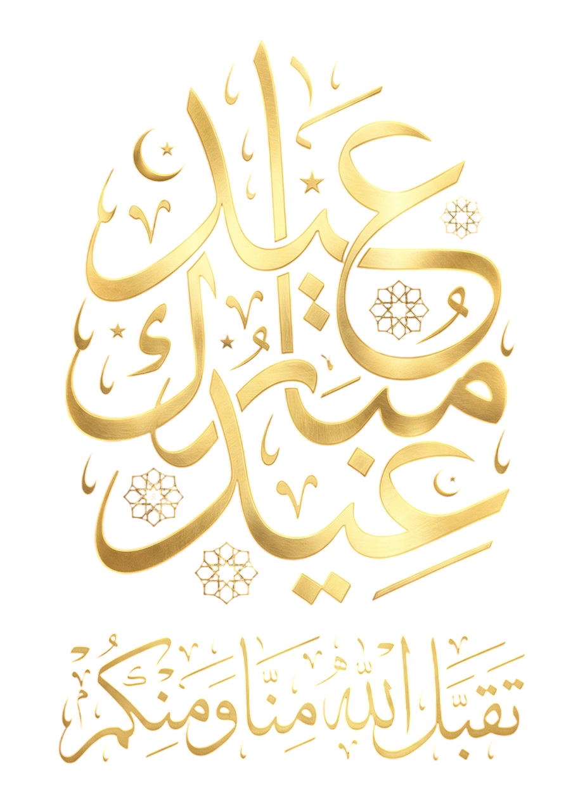

☪
Taqabbalallahu Minna Wa Minkum
1 Syawal 1447 H
Selamat Hari Raya Idul Fitri.
Mohon maaf lahir dan batin atas segala kekhilafan. Semoga silaturahmi kita tetap terjaga meski jarak memisahkan.
Selamat berkumpul dengan keluarga tercinta!